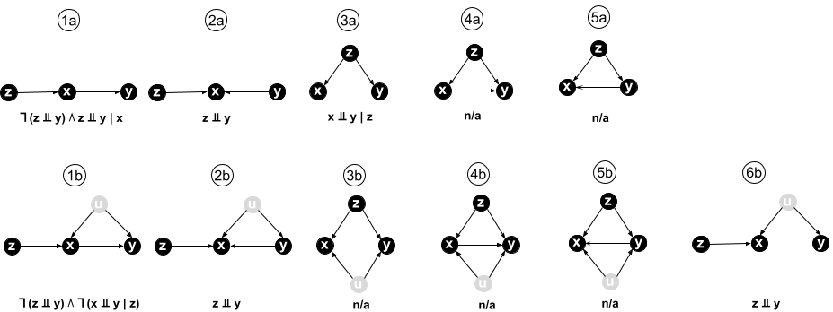
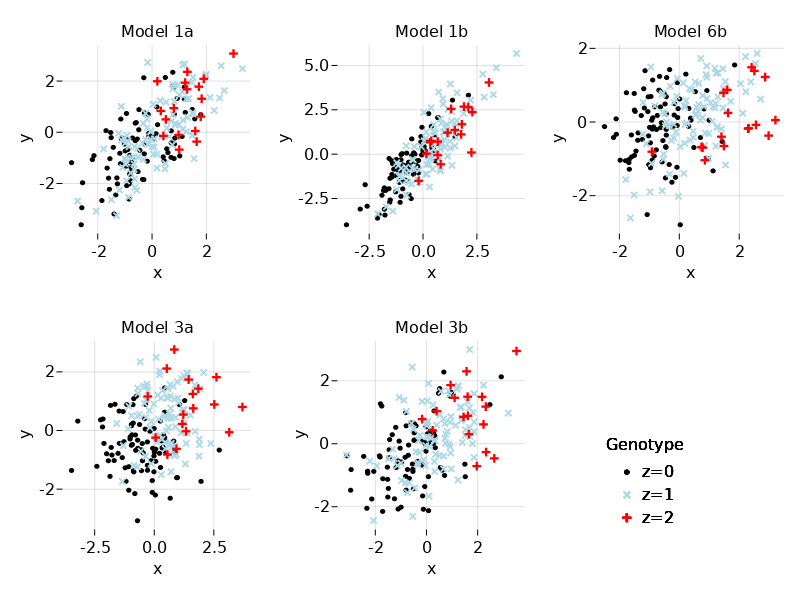

Causal model selection
Background
In this tutorial we consider two continuous and correlated variables, \(X\) and \(Y\), representing the expression levels of two genes. We also consider a discrete variable \(Z\) representing a genotype for gene \(X\). Typically, \(Z\) will have been obtained by eQTL mapping for gene \(X\). We wish to determine if variation in \(X\) causes variation in \(Y\).
The aim of causal model selection is: given observational data for \(Z\), \(X\), and \(Y\) in a set of independent samples, which causal model (represented by a directed acyclic graph) explains the data best.
To restrict the space of possible models that need to be considered, a number of assumptions reflecting biological knowledge can be made:
Genetic variation influences variation in gene expression (and phenotypes more generally), but changing the value of an individual’s phenotype does not change their genome. Hence, in our models there can be no incoming arrows into \(Z\).
We assume that the statistical association between \(Z\) and \(X\) is due to a direct effect, that is, all causal models we consider must contain the directed edge \(Z\to X\). This assumption is justified if \(Z\) is located within or near to \(X\) (on the genome) and in a known regulatory region for \(X\).
For \(X\) and \(Y\) to be correlated (non-independent), there must be a path in the graph between them, more precisely \(X\) and \(Y\) must not be d-separated.
By the laws of Mendelian inheritance (particularly the random segregation of alleles), we may assume that \(Z\) is independent of any unobserved confounding factors \(U\) that cause \(X\) and \(Y\) to be correlated, and therefore there are no edges between \(Z\) and any unobserved \(U\).
If we assume that there are no unobserved factors, there are 5 possible models satisfying assumptions 1-4 (see figure below). If we allow for the presence of unobserved factors, we have the same 5 models with an additional unobserved \(U\) having a causal effect on \(X\) and \(Y\), plus one more model without an edge between \(X\) and \(Y\) where all of their correlation is explained by \(U\) (see figure).
Below each model in the figure, some of the key conditional independences implied by the model are shown, using the mathematical notation \(⫫\) for “is independent of”, \(∣\) for “conditional on”, \(∧\) for “and”, and \(¬\) for “it is not the case that”.

From this figure it is immediately clear that our aim of deciding whether \(X\) causes \(Y\) is unachievable. Even without any unobserved factors, models 4a and 5a are Markov equivalent: they entail the same conditional independences and are indistinguishable using observational data. In other words, there exists no condition that is both necessary and sufficient for \(X\) to cause \(Y\) given the above 4 assumptions.
There are two possible paths forward (apart from giving up): to use a sufficient condition or a necessary condition for causality. If the joint probability distribution of \(Z\), \(X\), and \(Y\) passes a sufficient condition, then it is guaranteed to have been generated by a model where \(X\) causes \(Y\), but there may be distributions with \(X\to Y\) that don’t pass the test (false negatives). Conversely, all joint distributions generated by models with \(X\to Y\) will pass a necessary condition, but there may be distributions generated by models where \(X\) does not cause \(Y\) that also pass the test (false positives).
Because estimating the joint distribution of \(Z\), \(X\), and \(Y\) and its conditional independences from a finite number of samples is itself an imperfect process that can only ever approximate the true distribution, having additional errors from using an imperfect causality test is not necessarily catastrophic, provided those errors are small enough.
A sufficient condition for \(X\to Y\)
Our sufficient condition for \(X\to Y\) is based on model 1a. This model implies that \(Z\) and \(Y\) are not independent, but \(Z\) is independent of \(Y\) conditioned on \(X\) (\(X\) is a mediator for the causal path from \(Z\) to \(Y\)). No other model satisfies those two relations:
- In models 2a, 2b, and 6b, \(Z\) and \(Y\) are independent.
- In all other models \(Z\) is not independent of \(Y\) conditioned on \(X\), either because there is a direct path from \(Z\) to \(Y\) not passing through \(X\), or because conditioning on \(X\) opens a path from \(Z\) to \(Y\) via the confounder \(U\) (due to the v-structure or collider at \(X\)).
Hence any joint distribution in which \(Z\) and \(Y\) are not independent, but \(Z\) is independent of \(Y\) conditioned on \(X\), must have been generated by model 1a, that is, by a model where \(X\to Y\). In mathematical notation:
\[ ¬(Z⫫Y) ∧ (Z⫫Y∣X) ⇒ (X→Y) \]
A necessary condition for \(X\to Y\)
Because all models contain the edge \(G→X\), it follows that if \(X→Y\), then \(Z\) and \(Y\) cannot be independent, providing a simple necessary condition for \(X→Y\). However, \(Z\) and \(Y\) are also not independent in models 3a-b and 5a-b, in which \(Y→X\), because of the direct edge \(G→Y\). Of these, only 3a can be excluded, because in 3a, \(X⫫Y∣Z\), a condition not satisfied in any model where \(X→Y\). Combining these two results, we obtain
\[ (X→Y) ⇒ ¬(Z⫫Y) ∧ ¬(X⫫Y∣Z) \]
Import packages
In this tutorial, we will first set up some code to generate and visualize simulated data for \(Z\), \(X\), and \(Y\) given one of the models in the figure above. Then we will implement the sufficient and necessary conditions for \(X→Y\) and assess how well they perform in a number of scenarios. The code is written in julia. It should be fairly straightforward to translate into other languages.
We start by importing some necessary packages:
using Random
using Distributions
using StatsBase
using DataFrames
using GLM
using LinearAlgebra
using CairoMakie
using LaTeXStringsData simulation
First we set a random seed and fix the number of samples:
Random.seed!(123)
N = 200;In our simulations, as in real biology, a genotype value is sampled first. Then expression values for the two genes are sampled conditional on the genotype value.
Genotype data simulation
We simulate the genotype of a bi-allelic (2 values), diploid (2 copies) polymorphism. We encode the major and minor alleles by the values 0 and 1, respectively. The genotype is sampled by defining the minor allele frequency (MAF) as a parameter of the simulation. Two haploids are sampled using a Bernoulli distribution and summed to give the genotype, that is, the genotype is the number of copies of the minor allele in an individual.
Because the mean of a Bernoulli distribution with probability of success \(p\) is \(p\), the mean of \(Z\) is 2 times the minor allele frequency, and we therefore subtract this value from the sampled genotypes to obtain samples from a random variable \(Z\) with mean zero. Note that we cannot center the actual sampled values at this point, because we still need to generate the expression data conditional on \(Z\), and the expression levels of an individual cannot depend on the sample mean of the genotypes in a population!
maf = 0.3
H1 = rand(Bernoulli(maf),N)
H2 = rand(Bernoulli(maf),N)
Z0 = H1 .+ H2
Z = Z0 .- 2*maf;Expression data simulation
To simulate data for \(X\) and \(Y\), we must first set up the structural equations for the causal model we want to simulate. We will assume linear models with additive Gaussian noise throughout.
Let’s start by models 1a, 1b, and 6b. Their structural equations can be written as
\[ \begin{align} X &= a Z + U_X\\\\ Y &= b X + U_Y \end{align} \]
where \(U_X\) and \(U_Y\) are normally distributed errors with joint distribution
\[ (U_X, U_Y)^T \sim {\cal N}(0,Σ_{U}) \]
with covariance matrix
\[ Σ_{U} = \begin{pmatrix} 1 & ρ\\\\ ρ & 1 \end{pmatrix} \]
In model 1a, the errors are uncorrelated, \(\rho=0\), and we arbitrarily set the errors to have unit variance. In model 1b, the unobserved confounder \(U\) has the effect of correlating the errors, that is \(0<\rho<1\). In model 6b, the errors are also correlated, \(0<\rho<1\), but there is no direct effect of \(X\) on \(Y\), that is \(b=0\).
The parameters \(a\) and \(b\) are the causal effect sizes, and their magnitudes should be interpreted relative to the unit standard deviation of the random errors. In other words, each additional alternative allele shifts the mean of \(X\) by \(a\) standard deviations of the random errors.
Given a value \(Z=z\), eqs. (1)–(2) can be rewritten in matrix-vector notation as
\[ \begin{pmatrix} X\\\\ Y \end{pmatrix} = \begin{pmatrix} az \\\\ abz \end{pmatrix} + \begin{pmatrix} 1 & 0\\\\ b & 1 \end{pmatrix} \begin{pmatrix} U_X\\\\ U_Y \end{pmatrix} \]
Using properties of the multivariate normal distribution, it follows that
\[ \begin{equation} \begin{pmatrix} X\\\\ Y \end{pmatrix} \mid Z=z ∼ {\cal N} \left( \mu_z, Σ_{XY} \right) \end{equation} \]
with
\[ \begin{align*} \mu_z &= \begin{pmatrix} az \\\\ abz \end{pmatrix} \\\\ Σ_{XY} &= \begin{pmatrix} 1 & 0\\\\ b & 1 \end{pmatrix} \begin{pmatrix} 1 & ρ\\\\ ρ & 1 \end{pmatrix} \begin{pmatrix} 1 & b \\\\ 0 & 1 \end{pmatrix} = \begin{pmatrix} 1 & b+ρ\\\\ b+ρ & b^2 + 2b\rho + 1 \end{pmatrix} \end{align*} \]
Hence given a sampled genotype value \(Z\), we can sample values for \(X\) and \(Y\) by sampling from the multivariate normal distribution (3). In fact, julia knows how to do calculus with distributions, and we only need to specify the distribution of the random errors and the affine matrix-vector transformation:
function sample_XcauseY(Z,a=1.0,b=0.8,rho=0.0)
# number of samples
N = length(Z)
# Covariance matrix for the unmodelled factors
covU = [1.0 rho
rho 1.0]
# distribution of the unmodelled factors
distU = MvNormal(covU)
# the covariance between X and Y due to direct and unmodelled effects
B = [1. 0.
b 1.]
distXY = B * distU
# sample XY expression levels from model 1a, 1b, or 6b, depending on the values of rho and b
XY = [a*Z a*b*Z] + rand(distXY,N)'
return XY
end;Your turn: Can you derive and implement the structural equations for the other models?
The function to sample from models 3a or 3b is as follows:
function sample_GcauseXY(Z,a=1.0,b=0.8,rho=0.0)
# number of samples
N = length(Z)
# Covariance matrix for the unmodelled factors
covU = [1.0 rho
rho 1.0]
# distribution of unmodelled factors
distU = MvNormal(covU)
# sample XY expression levels from model 3a or 3b, depending on the value of rho
XY = [a*Z b*Z] + rand(distU,N)'
return XY
end;Now sample some data:
XY1a = sample_XcauseY(Z,1.,0.8,0.) # sample from model 1a
XY1b = sample_XcauseY(Z,1.,0.8,0.4) # sample from model 1b
XY6b = sample_XcauseY(Z,1.,0.,0.4); # sample from model 6b
XY3a = sample_GcauseXY(Z,1.,0.8,0.) # sample from model 3a
XY3b = sample_GcauseXY(Z,1.,0.8,0.4); # sample from model 3bLet’s collect all our data in a dataframe:
data = DataFrame(Z0=Z0, Z=Z,
X1a=XY1a[:,1], Y1a=XY1a[:,2],
X1b=XY1b[:,1], Y1b=XY1b[:,2],
X6b=XY6b[:,1], Y6b=XY6b[:,2],
X3a=XY3a[:,1], Y3a=XY3a[:,2],
X3b=XY3b[:,1], Y3b=XY3b[:,2]);We can visualize the data using scatter plots of \(X\) and \(Y\) colored by genotype value:
f1 = Figure()
figttl = ["Model 1a", "Model 1b", "Model 6b", "Model 3a", "Model 3b"]
rowid = [1, 1, 1, 2, 2]
colid = [1, 2, 3, 1, 2]
for k=1:5
ax = Axis(f1[rowid[k],colid[k]], xlabel="x", ylabel="y",
title=figttl[k],
aspect=AxisAspect(1))
hidespines!(ax)
scatter!(data[data.Z0.==0,2*k+1],data[data.Z0.==0,2*k+2],
label="z=0", marker=:circle, color=:black,
markersize=7)
scatter!(data[data.Z0.==1,2*k+1],data[data.Z0.==1,2*k+2],
label="z=1", marker=:xcross, color=:lightblue,
markersize=12)
scatter!(data[data.Z0.==2,2*k+1],data[data.Z0.==2,2*k+2],
label="z=2", marker=:cross, color =:red,
markersize=12)
f1[2,3] = Legend(f1, ax, "Genotype",
framevisible = false,
tellheight=false, tellwidth=false,
halign=:left, valign=:bottom)
end
f1
Model selection
Testing the sufficient condition for \(X\to Y\)
For the sufficient condition we have to test whether \(Z\) and \(Y\) are dependent and whether this dependence disappears after conditioning on \(X\). If we assume linear models, these tests can be performed by standard least squares regression and testing for non-zero coefficients.
Testing data generated by Model 1a
First we test whether \(Z\) and \(Y\) are dependent by regressing \(Y\) on \(Z\). Note that by construction \(Y\) and \(Z\) are samples from random variables with zero mean and hence we don’t include an intercept in the regression:
yg = lm(@formula(Y1a ~ 0 + Z),data)From the small \(p\)-value we can reject the null hypothesis of no dependence between \(Y\) and \(Z\), and hence we conclude that the first test is passed.
Next we test whether \(Z\) and \(Y\) become independent after conditioning on \(X\), that is, after regressing out \(X\) from \(Y\):
yx = lm(@formula(Y1a ~ 0 + X1a),data)The residuals of the regression of \(Y\) on \(X\) can now be tested for association with \(Z\):
data.residYX1a = residuals(yx)
ygx = lm(@formula(residYX1a ~ 0 + Z),data)Clearly the null hypothesis of no association cannot be rejected, and we conclude that the second test has also been passed.
In conclusion, the data satisfies the sufficient condition for causality and we conclude (correctly) that it has been generated by a causal model with an edge \(X\to Y\) (a true positive result).
Testing data generated by Model 1b
We repeat the same procedure for the data generated by model 1b:
yg = lm(@formula(Y1b ~ 0 + Z),data)From the small \(p\)-value we can again reject the null hypothesis of no dependence between \(Y\) and \(Z\), and hence we conclude that the first test is passed.
Next we regress out \(X\) from \(Y\), and test the residuals for association with \(Z\):
yx = lm(@formula(Y1b ~ 0 + X1b),data)
data.residYX1b = residuals(yx)
ygx = lm(@formula(residYX1b ~ 0 + Z),data)This time we have to reject the null hypothesis of no association because of the small \(p\)-value, and we conclude that the second test has not been passed.
In conclusion, the data does not satisfy the sufficient condition for causality and we conclude (wrongly) that it has not been generated by a causal model with an edge \(X\to Y\) (a false negative result).
Testing data generated by Model 6b
We repeat the procedure one more time for the data generated by model 6b:
yg = lm(@formula(Y6b ~ 0 + Z),data)This time we cannot reject the null hypothesis of no dependence between \(Y\) and \(Z\), and hence we conclude that the first test has not passed.
We can conclude immediately that the data does not satisfy the sufficient condition for causality and we conclude (correctly) that it has not been generated by a causal model with an edge \(X\to Y\) (a true negative result).
Your turn
Repeat the analysis of the sufficient condition for the data generated by model 3a and 3b. What do you conclude and are those conclusions correct or not?
Testing the necessary condition for \(X\to Y\)
For the necessary condition we have to test whether \(Z\) and \(Y\) are dependent and whether \(X\) and \(Y\) become independent after conditioning on \(Z\). Assuming linear models, these tests can again be performed by least squares regression and testing for non-zero coefficients.
Testing data generated by Model 1b
As before, we test whether \(Z\) and \(Y\) are dependent by regressing \(Y\) on \(Z\):
yg = lm(@formula(Y1b ~ 0 + Z),data)From the small \(p\)-value we can again reject the null hypothesis of no dependence between \(Y\) and \(Z\), and hence we conclude that the first test is passed.
Next we also regress \(X\) on \(Z\), and test the residuals of both regressions for association with each other:
xg = lm(@formula(X1b ~ 0 + Z),data)
data.residGY1b = residuals(yg)
data.residGX1b = residuals(xg)
ygx = lm(@formula(residGY1b ~ 0 + residGX1b),data)From the small \(p\)-value we can reject the null hypothesis of no dependence between the residuals, and hence we conclude that the second test has also been passed.
In conclusion, the data satisfiess the necessary condition for causality and we conclude (correctly) that it has been generated by a causal model with an edge \(X\to Y\) (a true positive result).
Testing data generated by Model 3a
We repeat the same procedure for the data generated by model 3a:
yg = lm(@formula(Y3a ~ 0 + Z),data)From the small \(p\)-value we can again reject the null hypothesis of no dependence between \(Y\) and \(Z\), and hence we conclude that the first test is passed.
Next we again regress \(X\) on \(Z\), and test the residuals of both regressions for association with each other:
xg = lm(@formula(X3a ~ 0 + Z),data)
data.residGY3a = residuals(yg)
data.residGX3a = residuals(xg)
ygx = lm(@formula(residGY3a ~ 0 + residGX3a),data)This time we cannot reject the null hypothesis of no dependence between the residuals, and hence we conclude that the second test has not been passed.
In conclusion, the data does not satisfy the necessary condition for causality and we conclude (correctly) that it has not been generated by a causal model with an edge \(X\to Y\) (a true negative result).
Testing data generated by Model 3b
We repeat the same procedure for the data generated by model 3b:
yg = lm(@formula(Y3b ~ 0 + Z),data)From the small \(p\)-value we can again reject the null hypothesis of no dependence between \(Y\) and \(Z\), and hence we conclude that the first test is passed.
Next we again regress \(X\) on \(Z\), and test the residuals of both regressions for association with each other:
xg = lm(@formula(X3b ~ 0 + Z),data)
data.residGY3b = residuals(yg)
data.residGX3b = residuals(xg)
ygx = lm(@formula(residGY3b ~ 0 + residGX3b),data)Because of the small \(p\)-value we must reject the null hypothesis of no dependence between the residuals, and hence we conclude that the second test has also passed.
In conclusion, the data satisfies the necessary condition for causality and we conclude (wrongly) that it has been generated by a causal model with an edge \(X\to Y\) (a false positive result).
Your turn
Repeat the analysis of the sufficient condition for the data generated by model 1a and 6b. What do you conclude and are those conclusions correct or not?
Some comments and further reading
Which condition for causality to choose?
Despite the simplicity of these examples they show the full spectrum of what to expect from these approaches to causal inference from molecular QTL data. It is important to stress that the false negative and false positive findings are not due to any errors in the tests themselves, misspecifications of the model (the models used to generate and fit the data are identical) or measurement noise (none was added in the simulations). Instead it is a basic mathematical truth that a condition for causality that is sufficient but not necessary will be prone to false negative predictions, whereas a condition that is necessary but not sufficient will be prone to false positive predictions.
Whether to use the sufficient or the necessary condition in concrete applications depends on a number of considerations:
Is it more important to generate only high-confidence predictions before performing expensive experimental validation, or is it more important not to miss any real causal interactions before applying additional filtering steps?
Do you expect that unknown confounders play a major or minor role in your data? For instance, in gene regulatory networks (GRNs) feedforward loops (where a transcription factor (TF) and its target are coregulated by a 2nd TF) are common, and therefore the necessary condition systematically outperforms the sufficient condition for reconstructing GRNs, see for instance these papers:
How precise are your measurements? The sufficient condition is not only susceptible to hidden confounders, but also to measurement noise, which further increases its false negative rate (see the first paper above for details).
How to quantify statistical significance and uncertainty?
In the examples above, we basically eye-balled the \(p\)-values and gave thumbs-up or thumbs-down for a causal relation. Not only is this practically infeasible when testing causality between ten-thousands of pairs in omics data, we would also like to quantify the statistical significance and uncertainty of each finding. This turns out to be a non-trivial question, because:
- Both the sufficient and necessary condition are combinations of statistical tests.
- The necessary condition includes a test where accepting the null hypothesis is a positive finding, but a non-significant \(p\)-value (no evidence for rejecting the null hypothesis) does not imply significant evidence against the alternative hypothesis.
One strand of research has focused on summarizing the outcome of multiple hypothesis tests by a single \(p\)-value with the usual interpretation that a small \(p\)-value is evidence for rejecting the null hypothesis of no causal interaction, see these papers:
- Disentangling molecular relationships with a causal inference test
- Modeling Causality for Pairs of Phenotypes in System Genetics
- cit: hypothesis testing software for mediation analysis in genomic applications
However, to overcome in particular the second problem above, these methods have to introduce pairwise model comparison statistics almost by stealth. A much better approach (in my not so objective opinion!) is to do this explicitly in a Bayesian framework.
In the papers below, each of the component tests (for instance, \(¬(Z⫫Y)\) or \(Z⫫Y\mid X\) in the sufficient condition) is expressed as a likelihood-ratio test between two nested, null and alternative, models. Using \(q\)-values, the likelihood-ratio test statistics are converted into probabilities of the null or alternative model being true. These probabilities can then be combined by the usual rules of probability theory (e.g., multiplied to express that two tests must be true).
- Harnessing naturally randomized transcription to infer regulatory relationships among genes
- Efficient and accurate causal inference with hidden confounders from genome-transcriptome variation data
In addition, the second paper provides a software implementation that is highly efficient, and can test both the sufficient and the necessary condition for causality (all other papers essentially only study the sufficient condition).
Your turn?
If you are convinced by the above arguments and have some molecular QTL data waiting to be analyzed by causal inference, try our Findr software.